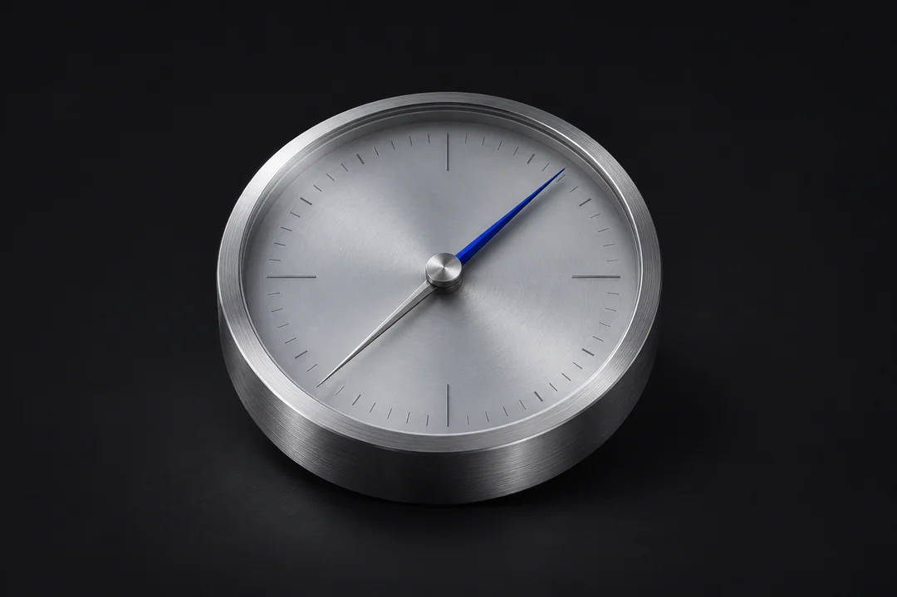

Sistema experto
¿Una caída pondría en riesgo tu meta?
Prueba cuánto dinero te quedaría si tu inversión pierde valor. Después, descubre cómo el plazo y tu tolerancia influyen en tu perfil de riesgo.

Prueba con tu meta
El ejemplo parte de $10,000 disponibles y una meta de $9,000. Puedes cambiar ambos montos.
Tu saldo después de la caída
$8,000
Te faltarían $1,000 para alcanzar tu meta.
Chat de perfil
Pregunta 1 de 14